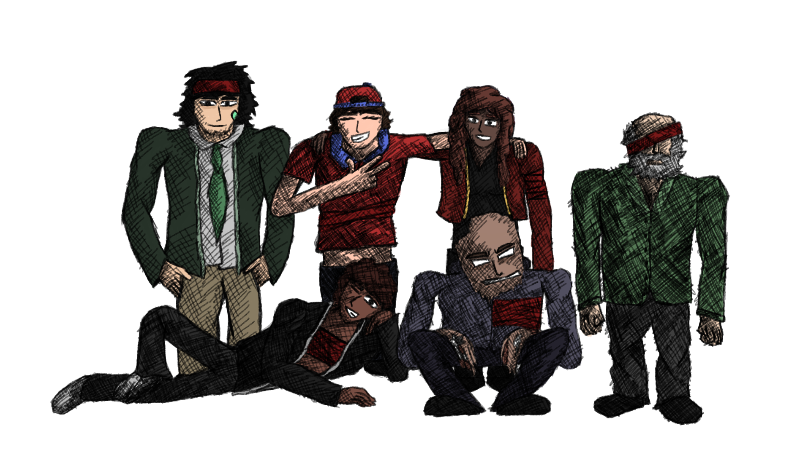

Relaunch of astni.com
We're back!
It's been a while, since the website was working and stuff. (I think the website went down in April or May?)
Either way, we're back, and with some new stuff.
As you might've noticed, there's:
- 2 new blogs
- 1 new comic
- Slight website redesign (we removed the header)
- Added the steam page for Remnants on the sidebar
- Updated the homepage
And you might be wondering what the comic was about considering I labeled it as a test comic.
Rust & Harmony (R&H) is a comic series I'm gonna be making and it's just about some british guys that try to get by life.
^^ Up here, a drawing of the main cast. ^^
I'll also try to make more blogs and comics in general for the site so it isn't too vacant. Maybe some more content that isn't either of those, idk.
Anyways, I'll get going now, have a good day everyone! ^u^
written by astni for astni.com on 25/6/2024